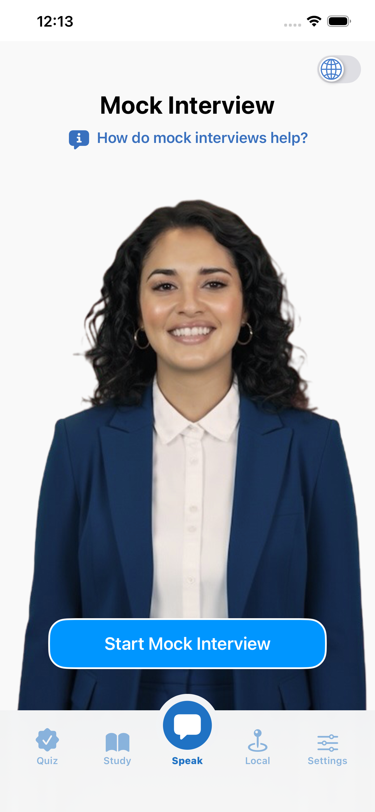
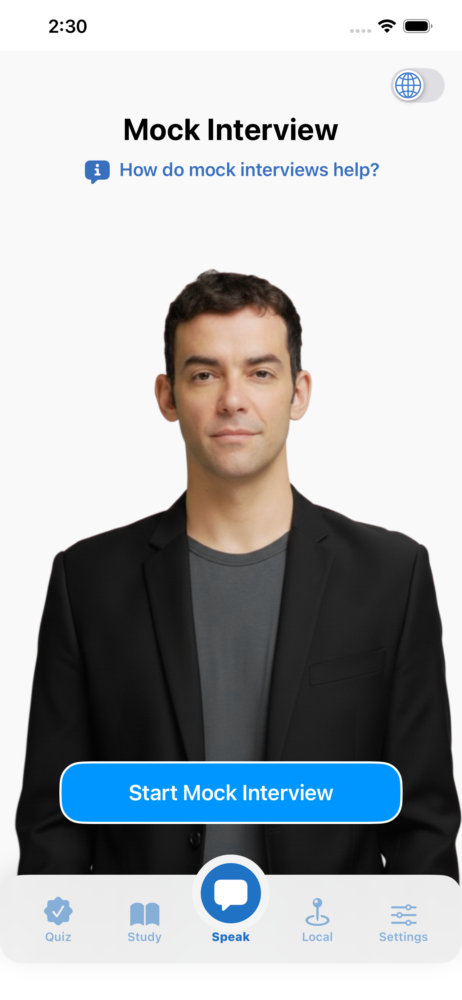
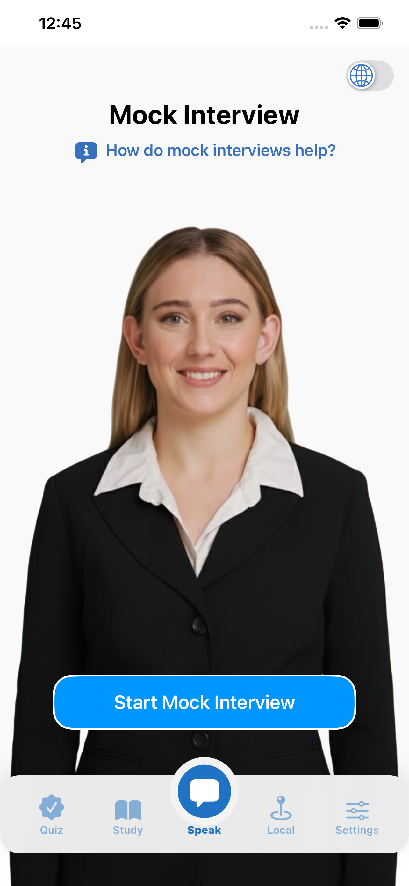
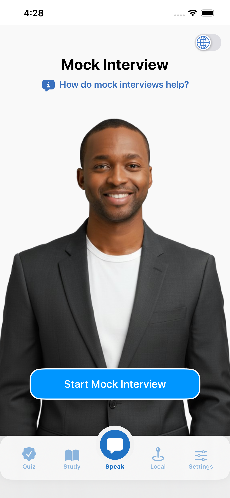
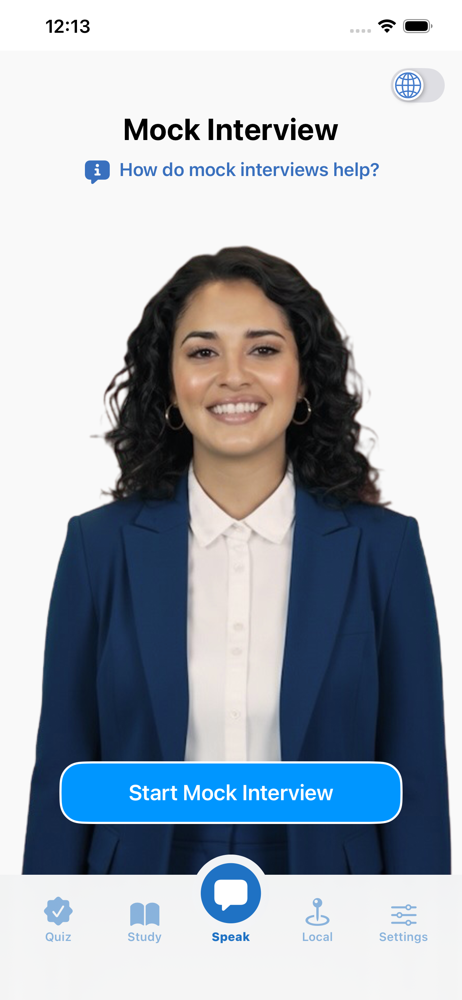
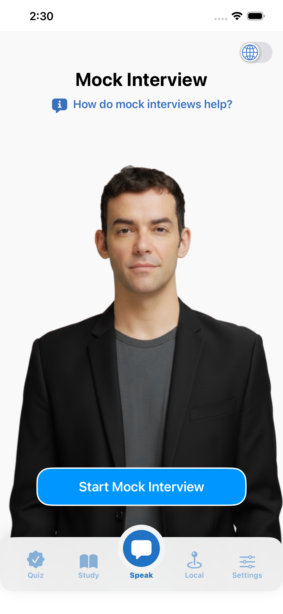
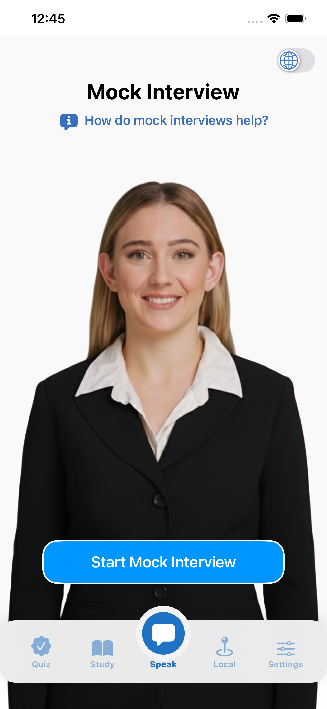
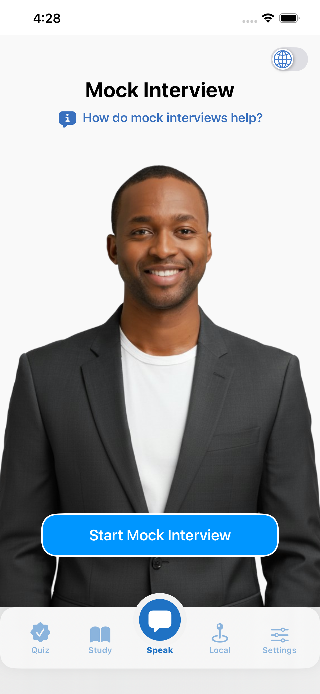

Complete Study Guides
Access comprehensive study materials for all official USCIS civics questions. Covers both the 100-question (2008) and 128-question (2025) versions.
Practice with virtual USCIS agents and pass your citizenship test
Citizenry is the only app that offers unlimited mock interviews with speech recognition, flashcards, study guides, audiobooks, and quizzes for both the 2008 and 2025 Civics Tests.
Free download • No ads • In-app purchases available
Citizenry offers comprehensive tools for both the 2008 and 2025 USCIS Civics Tests
Practice unlimited realistic video interviews with virtual USCIS agents. Our advanced speech recognition technology helps you build confidence before your real interview. Each interview is unique and simulates the actual naturalization experience.
There's no pressure during mock interviews. You can practice as much as you'd like until you feel 100% confident.
 







Access comprehensive study materials for all official USCIS civics questions. Covers both the 100-question (2008) and 128-question (2025) versions.
Learn on the go with hands-free audiobooks. Listen while driving, cooking, or exercising. Works even when your device is locked.
Instantly find your local representatives, senators, and governor by entering your ZIP code. Always updated and ready for your test.
Test your knowledge with interactive quizzes covering all civics questions. Build confidence and identify areas that need more study.
Add the widget to your Home Screen for quick, one-tap study sessions. Practice a little every day to stay sharp.
Study in your preferred language. Instantly switch between English and 20+ other languages anywhere in the app.
"I used Citizenry for 2 months and passed my civics test with ease. You should subscribe as soon as you have your biometrics appointment because in my case they sent my interview appointment for the next month."
"Thank You for creating this application ♥️ it really helps to get you understand everything!!"
"I usually don't do reviews but it felt like the least I could do was to appreciate this app! I didn't even go through the study material given by the USCIS. I just kept going through this app and I passed my civics test successfully today. Once you enter your zip code it just lays all the information and questions out for you!"
The US citizenship test, also called the naturalization test or citizenship interview, is a key step to becoming an American citizen. This test shows your understanding of US history, government, and commitment to American values. The test has three main parts:
This part checks your eligibility and moral character for citizenship. A USCIS officer will ask questions based on your N-400 form, including details about your travel history, legal status, and background.
This tests your knowledge of U.S. history and government. A USCIS officer will ask you up to 10 questions from the official list. You must answer at least 6 correctly to pass. Two test versions are currently in use: the 2008 version (100 questions) and 2025 version (128 questions).
This assesses your reading, writing, and speaking skills in English. You will read a sentence aloud, write a sentence as dictated, and speak during the interview. The USCIS officer evaluates your ability to understand and communicate in English.
The path to citizenship, known as naturalization, varies depending on your specific situation. Here are the main requirements:
The 2008 civics test has 100 questions total. During your interview, a USCIS officer will ask you up to 10 questions, and you must answer at least 6 correctly to pass. If you filed Form N-400 before October 20, 2025, you'll take the 2008 version.
The 2025 civics test has 128 questions total. During your interview, a USCIS officer will ask you up to 20 questions, and you must answer at least 12 correctly to pass. If you filed Form N-400 on or after October 20, 2025, you'll take the 2025 version.
The citizenship test can be challenging, but it's definitely manageable with proper preparation. Many find the civics portion most difficult because it requires specific knowledge about US government and history. Using an app like Citizenry with mock interviews significantly improves your chances of passing.
No, the citizenship test is not multiple choice. It's an oral interview where a USCIS officer asks you questions, and you must answer verbally. There are no answer choices given to you—you need to know the correct response. This is why practicing with mock interviews is so valuable.
The best way to prepare is to practice with realistic mock interviews. Citizenry offers unlimited video interviews with virtual USCIS agents that simulate the actual interview experience. Combined with study guides, audiobooks, and quizzes, you can build confidence and be fully prepared.
If you filed Form N-400 before October 20, 2025, you'll take the 2008 version with 100 questions. If you filed on or after October 20, 2025, you'll take the new 2025 version with 128 questions. Citizenry includes study materials and mock interviews for both versions.
If you fail any part of the test (civics or English), you'll be given one more opportunity to retake the failed portion, typically within 60-90 days. This is why thorough preparation with practice interviews is so important—it helps ensure you pass on your first attempt.
Most people need 1-3 months of consistent study to feel confident. Daily practice with Citizenry's quizzes and mock interviews will help you prepare efficiently.
Yes! Citizenry supports over 20 languages including Spanish, Chinese, Vietnamese, Korean, and more. You can study in your preferred language while also practicing your English skills. The app helps you learn both the civics content and improve your English for the test.
According to USCIS data for FY 2022, the overall pass rate for the naturalization test is 95.7%. Specifically, 92.4% of applicants pass the civics test on their first attempt, and English reading has a 97% pass rate. With proper preparation using apps like Citizenry, most applicants pass on their first try.
According to USCIS, you should bring: your interview appointment notice, your Permanent Resident Card (Form I-551), a state-issued ID such as a driver's license, and all valid and expired passports and travel documents that show your travel history since becoming a permanent resident. For additional documents you may need, see the USCIS Form M-477 Document Checklist.
According to USCIS (as of April 1, 2024), the N-400 filing fee is $710 for online filing or $760 for paper filing. A reduced fee of $380 is available for applicants with household incomes between 150% and 400% of the Federal Poverty Guidelines. Fee waivers are available for those at or below 150% of the poverty level.
Citizenry is free to download with no ads. The app offers free flashcards, study guides, audiobooks, and quizzes. A subscription unlocks unlimited mock interviews with virtual USCIS agents.
Join thousands who have passed their citizenship test with Citizenry